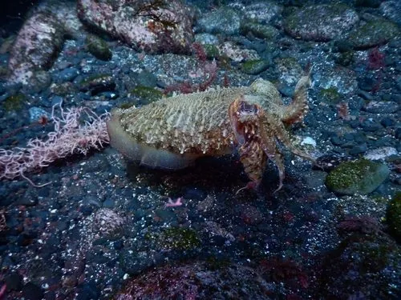

软体动物 · 动物界
大西洋乌贼 Sepia officinalis

欧洲近海常见的中型乌贼，体色能瞬间变化，体内有石灰质内壳，是地中海和东北大西洋重要的渔业资源。
- 分类
- 门软体动物门纲头足纲目乌贼目科乌贼科属乌贼属
- 栖息环境
- 东北大西洋和地中海的近岸沙泥、岩礁海域，水深 0–200 m
- 地理分布
- 东北大西洋和地中海，从英国、法国、西班牙到北非沿海
- 保护级别
- 暂无评估；中国未列入国家重点保护野生动物名录
物种志
大西洋乌贼体呈卵圆形、背腹稍扁，两侧有鳍环绕。体色黄褐、灰褐或带条纹，皮肤中的色素细胞能在瞬间改变颜色和花纹，用于伪装和交流。胴长一般 20–30 cm，最大可达 45 cm，体重可达 2 kg。
大西洋乌贼分布于东北大西洋和地中海，从英国、法国、西班牙到北非沿海。它栖息于近岸沙泥和岩礁海域，水深 0–200 m，有季节性洄游：夏季在浅海繁殖，冬季游向较深的水域。它是肉食性动物，捕食虾、蟹、小鱼和软体动物，靠两条可迅速弹出的触腕捕捉猎物。大西洋乌贼寿命约 1–2 年，繁殖后死亡；雌性把卵附着在礁石和海藻上，并会守护卵。它是地中海和东北大西洋重要的渔业资源，可鲜食或加工，体内的石灰质内壳也就是中药里的“海螵蛸”。目前它没有IUCN 的正式评估，中国未将其列入国家重点保护野生动物名录。
形态与习性
- 食性捕食虾、蟹、小鱼和软体动物
- 胴长一般 20–30 cm，最大可达 45 cm
- 栖息深度近岸海域，水深 0–200 m
- 繁殖夏季在浅海繁殖，卵附着在礁石和海藻上
- 寿命约 1–2 年，繁殖后死亡
- 经济价值地中海和东北大西洋重要的渔业资源
趣味知识
- 大西洋乌贼的皮肤能在瞬间改变颜色和花纹，用于伪装和交流。
- 它的体内有一块石灰质内壳，也就是中药里的“海螵蛸”。
- 大西洋乌贼寿命只有 1–2 年，繁殖后死亡。